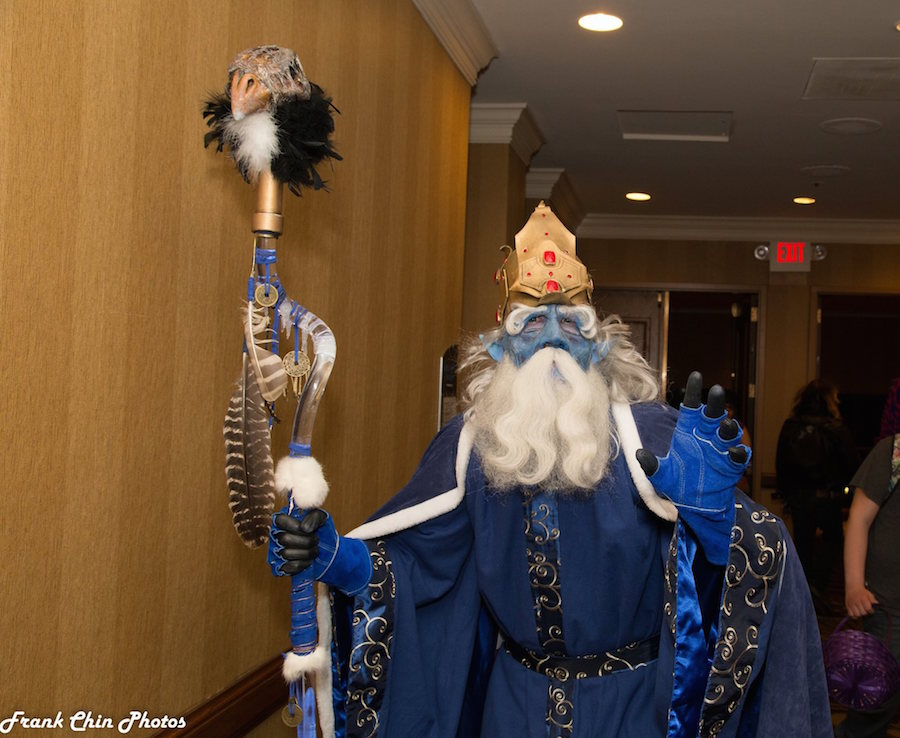

I just returned from MidSouthCon 33, where I was invited to be an author guest. Here is my experience from the show.

I’d like to start by thanking MidSouthCon for having me as a guest. This was my first MidSouthCon, and I felt I was treated quite well by the staff. The show was well-done, and aside from a couple of small hickups, everything went smoothly. I was able to meet fans of SagaBorn, meet other authors, form a couple of potential new partnerships, and get my book into the hands of some new readers.
Pictured here is Paul Bielaczyc in his “Realistic Ice King” costume. He had just competed in the Masquerade. I had the privelege of watching Mike and Paul costume up before the competition and have gained a new respect for what cosplayers go through. Especially those with brothers mean enough to spray their nipples with cold, blue paint when they close their eyes. That happened. Both nipples.
My Panels
Mythological, Paranormal, and Regular Creatures
This one started off with some difficulty. It began at 11 pm, and our moderator was replaced at the last minute. There was one other panelist, and we were all tired. But I believe we recovered and it became an interesting discussion.
We talked of mythology, archetypes, technology and the creatures of the future, the continued evolution of humanity, the motivations and personalities of dogs and other creatures, and probably even more that I’ve forgotten.
Building a World Through Art, Fiction, and Game Design—The World of Uteria
We had a great turnout for this one. Our crowd was engaged and asked many questions, so we thank them for that.
Our panel included Michael Bielaczyc, Paul Bielaczyc, Melissa Gay (who was also the show’s Artist Guest of Honor), Sam Flegal, and me. We discussed many of the challenges we’ve faced in creating a multimedia world of gaming, art, and fiction, and the ways that we’ve attempted to overcome those challenges.
Create Strong Characters
This panel, despite being at 9 pm on Saturday, packed the room and became a great conversation. This one included myself, Logan Masterson, Tracy Morris, Rosalie Stanton, Frank Tuttle, Jay Wilburn, and me.
We discussed the difficulties and procedures we use to create characters that have depth. We all agreed that the worst thing a writer can do is to create one dimensional characters that serve no purpose other than to move a plot along. So how does one add that depth? How does one add depth to a villain and avoid that villain being a simple force of pure evil? How does one find balance for a protagonist between flaws and relatability?
In Closing
The show had a few interesting issues arise. For instance, they put our booth in front of an exit, then came back to tell us we had to move. There were a few other odd moments as well, but they handled those situations well, and I believe we were all happy in the end.
Right now, I can only travel to one or two shows each year, so I have to take some care in my choice. I believe this is one I may go back to next year.